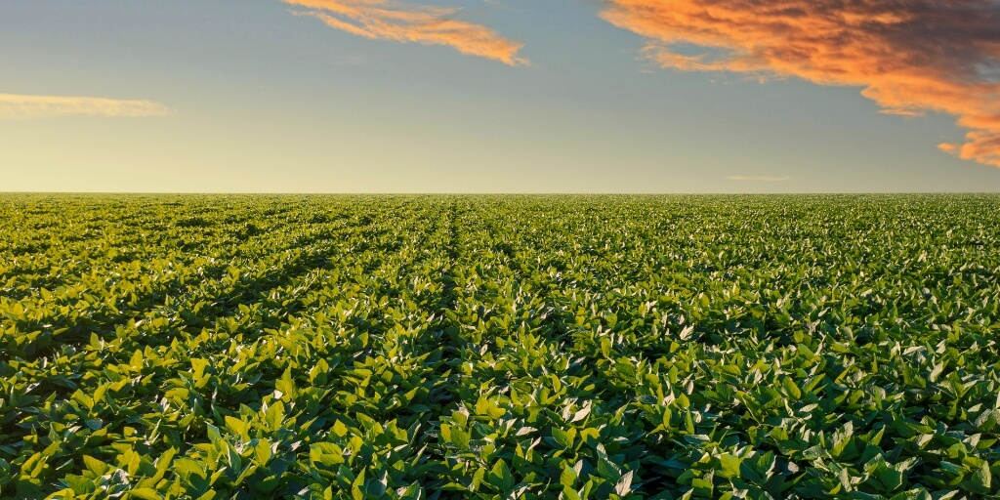
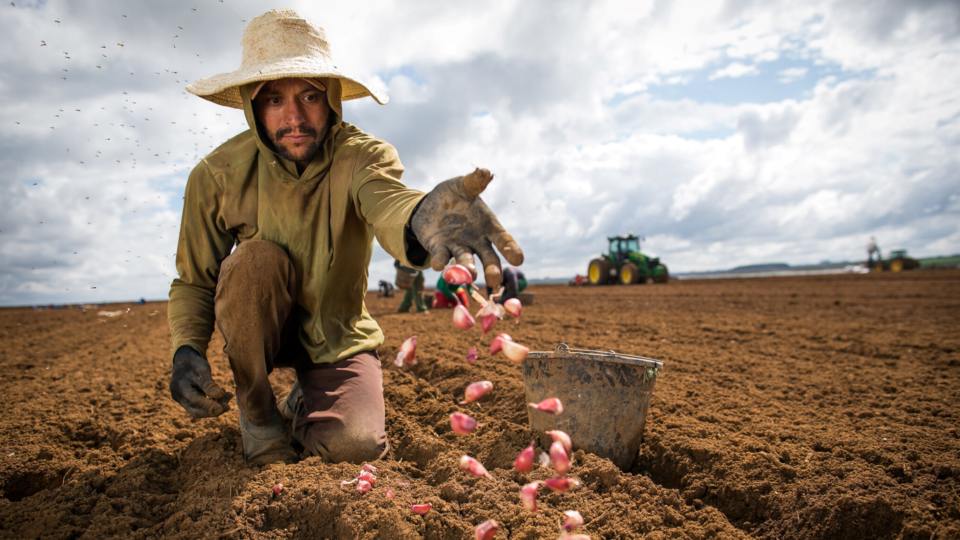
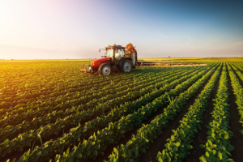
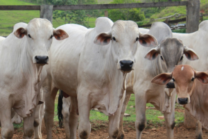
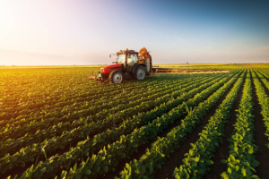
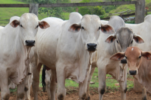

Bem-vindo ao Mundo do Agronegócio
O agronegócio é uma peça chave na economia global, conectando o campo e a cidade. Explore os diversos aspectos dessa indústria fundamental para o nosso cotidiano.

O agronegócio é uma peça chave na economia global, conectando o campo e a cidade. Explore os diversos aspectos dessa indústria fundamental para o nosso cotidiano.
O agronegócio inclui toda a cadeia produtiva agrícola, desde a produção no campo até o processamento e comercialização nas cidades. Envolve atividades como cultivo, pecuária, processamento de alimentos, e muito mais.
O agronegócio impacta significativamente tanto as áreas rurais quanto urbanas. Ele cria empregos, impulsiona a economia local, e é crucial para a segurança alimentar. Além disso, suas práticas influenciam o meio ambiente e as políticas agrícolas.


 



Para mais informações, dúvidas ou parcerias, entre em contato conosco: